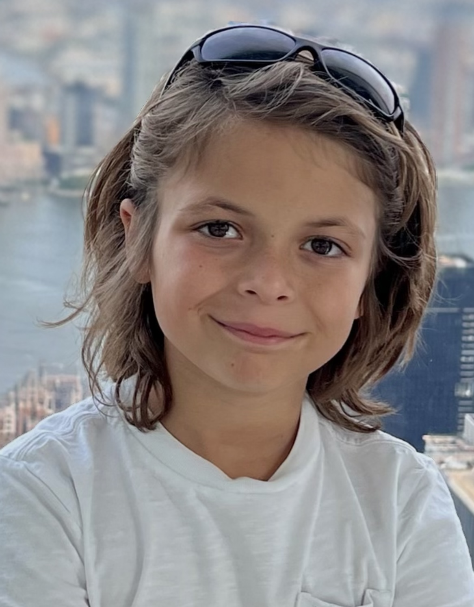

Dante Murena
Founder, Age 12 · Miami, Florida
"My name is Dante Murena, and I'm a 12-year-old sixth grader. I created My Local Charity because I was inspired by my sister Leila and her friends Bella and Reese, who started a charity called WundieUndies when they were my age. Watching them collect and donate thousands of undergarments, diapers, and hygiene products to people who really needed them made me want to help spread the word and get as many people as possible to donate to their charity — and to charities like it all over the country.
I was also inspired by MrBeast, who has shown me that helping others in need isn't just something adults do — it's something any of us can do, at any age. I believe that helping others is one of the greatest purposes and goals a person can have in life. My Local Charity is my way of making it easier for everyone to find a cause they care about and take action right in their own neighborhood."
I was also inspired by MrBeast, who has shown me that helping others in need isn't just something adults do — it's something any of us can do, at any age. I believe that helping others is one of the greatest purposes and goals a person can have in life. My Local Charity is my way of making it easier for everyone to find a cause they care about and take action right in their own neighborhood."
✨ What inspired this
Two big inspirations
My Local Charity was born out of two powerful examples of what it looks like when young people decide to make a difference.
WundieUndies
Dante's sister Leila and her two best friends Bella and Reese founded WundieUndies at age 12 — collecting and distributing undergarments, feminine hygiene products, and diapers to shelters and food banks across Miami. To date they've donated over 11,000 undergarments, 25,000 hygiene products, 38,000 diapers, and 5,000 baby wipes. Because dignity is a basic human right.
Beast Philanthropy
MrBeast's nonprofit — Beast Philanthropy — has shown Dante that philanthropy doesn't have an age requirement. Based in Greenville, NC, Beast Philanthropy distributes over 100,000 meals per month across Eastern North Carolina, proving that one person's decision to help can ripple out to hundreds of thousands of people.
🎯 Our mission
Making it easy to give locally
My Local Charity exists to connect people with the charities in their own neighborhoods. We believe that the most powerful giving happens close to home — when you can see the impact, meet the people, and be part of the community you're helping.
We're a free directory. We never process donations ourselves — every dollar you give goes directly to the charity you choose, through their own donation systems. We take nothing.
Discover
Find vetted local charities in your city, filtered by cause, zip code, or keyword.
Give Directly
Every donate button sends you to the charity's own website. 100% of donations go to them.
Grow Together
Any charity can list for free. We grow as our communities grow — city by city.
⚙️ How it works
Simple by design
1
We detect your location
When you visit mylocalcharity.org, we automatically detect your city using your IP address — no account, no sign-in required. You can also search any city or zip code manually.
2
Browse local charities
See vetted charities in your area, organized by cause category — food, housing, health, children, animals, education, and more. Filter and search to find exactly what resonates with you.
3
Give directly to them
Click Donate and you'll be taken directly to that charity's own donation page. My Local Charity never touches your money — every cent goes straight to the organization you choose.
4
Volunteer or drop off items
Many charities accept physical donations and volunteers. Browse the Volunteer and Drop-Off tabs to find opportunities near you.
📊 By the numbers
Growing every day
186Charities Listed
29Cities & Towns
7Cause Categories
FreeAlways Free to List
Get in touch
Have a charity you'd like to see listed? Want to partner with us? We'd love to hear from you.